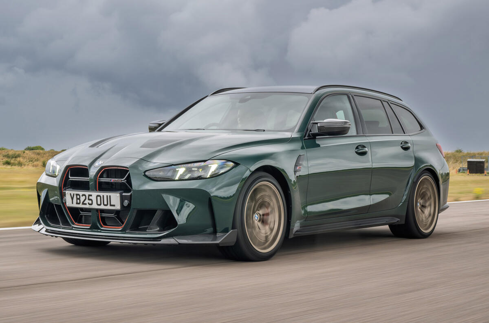

Beskrivning
I mitten av 80-talet så introducerade BMW världen till en ny era av entusiastbilar med introduktionen av E30 M3. En bil som kom att i stort sett på helt eget bevåg ändra hela marknaden och bli synonym med vad man associerar körglädje med. På samma sätt som första Golfen gjorde sin egen marknad så så gjorde M3 samma sak. Receptet var såklart inget nytt men det var kombinationen av ett chassi som var byggt för racing. Ett drivpaket som var ivrigt och välanpassat till bilen låga vikt. Men framför allt så var det kombinationen med en brukbar bil. Plats för vänner och familj. Bagageutrymme. Framgången för E30 är lätt att förstå så här i efterhand. Under 90 talet växte bilen men men behöll samma etos. Vi fick variation i form av en sedan i generationen som följde och runt millenniumskiftet så visade BMW till och med en M3 Touring på det som då kallades E46 M3. Drömmen. Sportbil och familjebil. Den ultimata 'sleepern'. Men konstigt nog så blev E46 M3 Touring aldrig mer än ett koncept. Och karossformen kombinerades aldrig med Det berömda M3 emblemet på bakluckan... förens 2022.
På sommarens Goodwood rullar den ut för första gången. G81 M3 Touring. Med en exteriör som inte sparar med att visa vart skåpet ska stå. Fyra arga pipor göms under diffusorn bak som flankas av ordentligt breda bakskärmar. Som sig bör på en M3. Utsidan är här klädd i BMWs djupa mörkblåa metallic som benämns Tanzanite Blue och kombineras här med eleganta fälgar med en finish som delas i en borstad finich och svart. Fronten domineras av den M3 specifika grillen och får ett ganska argt intryck tillsammans med laser-lamporna.
Öppna förardörren och du möts av en ny kontrast i Individual lädret som benämns Merino hos BMW och täcker hela insidan och bryter i partier i svart över instrumentbräda och dörrar. Arkitekturen känns bekant från den vanliga 3-serien men det råder ingen tvivel om att man sitter i en M3. Sportstolarna kramar runt en och både mittkonsol och ratt pryds med röda knappar. allt för att styra drivlinan. Och med ett knapptryck bredvid växelväljaren så är man igång. G81 har verkligen tagit M3 etoset till en ny nivå. Körupplevelsen är i sitt mest avslappnade läge som en vanlig 3-serie om än med rätt bra med pulver. men med de programmerbara knapparna på ratten så byter bilen karaktär till att bli en fullfjädrad sportbil.
Svensksåld,elegant men tidlös färgkombination med sitt inlackerade tak och spegelkåpor tillsammans med en uppsjö annan utrustning. Sparsamt använd och fortfarande med nybils-känsla. En ägare och MOMS.
BMW M3 CS Touring
1,795,500kr